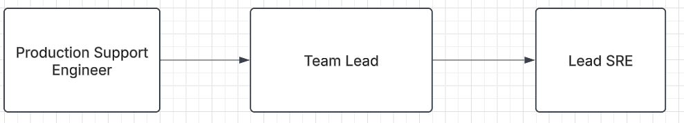

- Reduced product upgrade implementation duration by 30% and automated job creation and report generation using Shell and Python scripts, cutting service downtime by 25%.
- Architected scalable infrastructure on Google Cloud Platform using Terraform and GitLab pipeline integration, and successfully migrated a Kubernetes-based application, increasing efficiency by 40%.
- Managed testing of new product versions, presenting results to stakeholders to drive adoption and positive feedback, while ensuring timely task completion within SLAs through effective stakeholder collaboration.
Tata Consultancy Services
Project : National Commercial Bank, Saudi Arabia
- Led a team of 12 at the client location, improving on-time delivery of customer deliverables by 20% while ensuring project timelines were met through effective collaboration with internal teams, external partners, and adherence to SLAs.
- Directed the full lifecycle of microservices projects, optimizing application performance through robust testing systems, reducing bugs by 30%, and enhancing deployment efficiency with Docker, Kubernetes, and Git integration.
- Improved team collaboration and project efficiency by transforming business requirements into detailed technical design documents, boosting quality control by 25%, and enhancing user satisfaction by managing banking applications across multiple environments.
Project : State Bank Of India
- Oversaw application design and development within the Interfaces portfolio of the SBI CBS Development Project, utilizing advanced UNIX and SQL skills to create highly efficient scripts for gathering business-oriented data, resulting in significant performance enhancements and aiding in the analysis and improvement of SBI's working architecture
- Managed SBI online/offline/EOD/SOD operations using customized monitoring tools, resulting in a 20% efficiency increase, a 15% reduction in errors, and significant streamlining of processes
Click the button below to download my resume:
Download Resume